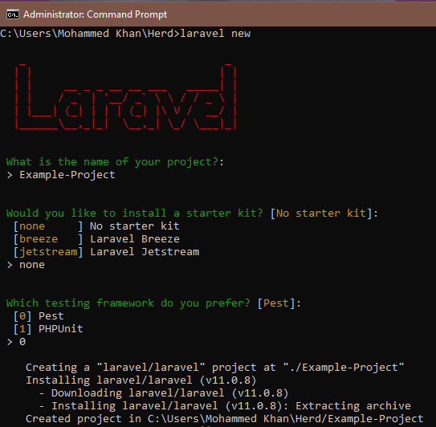
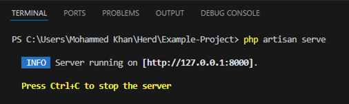

My First Laravel Website
A detailed breakdown
I’m at the start of my journey, creating a dev portfolio and documenting the process of learning the technologies that will carry me through this process.
I’ve started with Laravel, after searching for popular development frameworks and deciding I firstly need a website to place my thoughts on. A place where everything that I want to keep track of in this racing mind of mine, I’ll try to keep on-hand as something I can look back on and understand what decisions I’ve made and why. My brother works in Software Engineering as the CTO for a web-development company that primarily use Laravel so I wanted to see what all the hype was about.
Getting started, looking at the documentation for Laravel (https://laravel.com/docs/11.x/installation#creating-a-laravel-project) I decided to use Herd to ensure that I have all prerequisites installed. After ensuring I’ve got Composer, PHP, and Node installed through Herd, it was time to create my first project.

I’ve started with the basics, setting up a new Laravel project and getting it running on my local machine. I’ve been following the documentation on the Laravel website and have been able to get the project up and running. I’ve also been able to create a new controller and view, and have started to understand the basics of routing in Laravel.
Using SQLite as the database my application will be using, my example project is created. There was an error I ran into stating “git was not found in your PATH, skipping source download”. After a quick search, this StackOverflow question resolved my issue:
https://stackoverflow.com/questions/74253281/git-was-not-found-in-your-path-skipping-source-download
Editing the php.ini file and looking for the ;extension=zip to change it with extension=zip. Upon removing the semi-colon (;), my problem was solved.
My first project was made and it was now time to start tinkering with it.
To get my HTTP server up and running I need to run the “php artisan serve” command within CMD/Powershell after navigating to “Mohammed Khan\Herd\Example-Project”. Easier done within the Visual Studio integrated terminal as the directory is already set as soon as you open it.

First, I wanted to draft a landing page for my development portfolio. Instead of creating an entire page from scratch, since there’s so many resources these days I managed to find a template for a personal portfolio page. It’s written in HTML & CSS so it needs to be refactored to work within the Laravel framework.
“Example-Project\resources\views\web” is where my index.blade.php files are stored for now. Creating two folders, one for the index/landing page and one for the blog pages. The page I’ve created features a navigation bar with a few hyperlinks to get around the website.